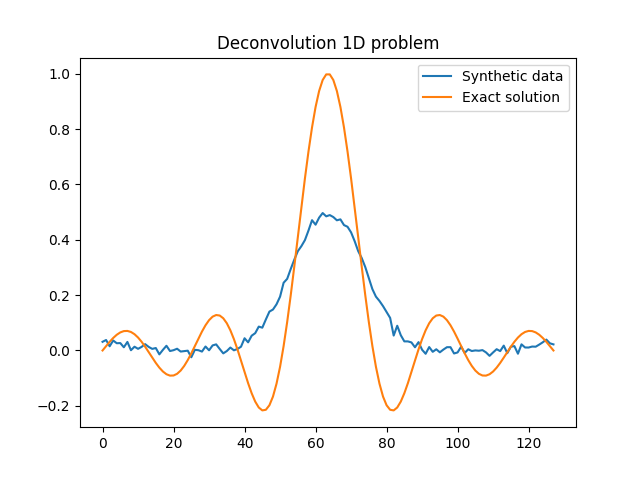
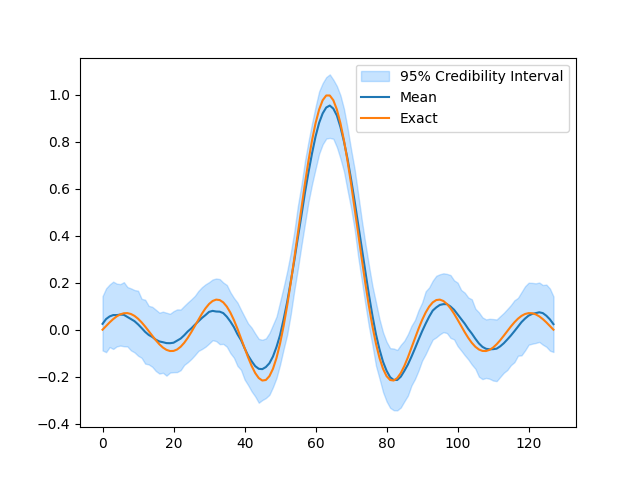
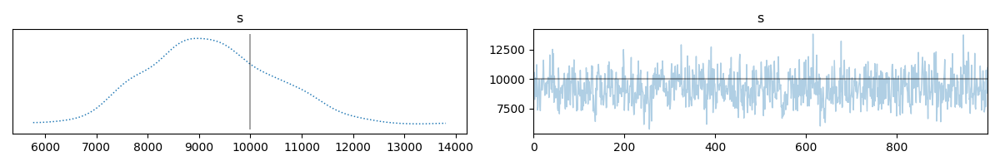
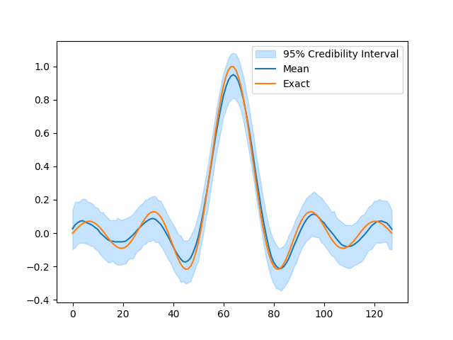
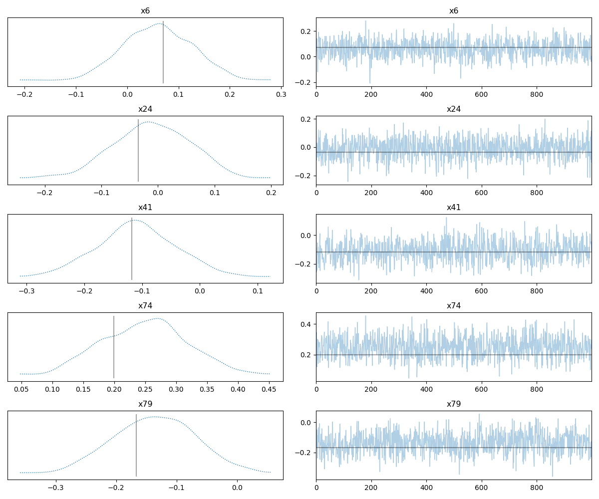
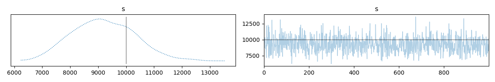

Note
Go to the end to download the full example code.
Uncertainty Quantification in one-dimensional deconvolution#
This tutorial walks through the process of solving a simple 1D deconvolution problem in a Bayesian setting. It also shows how to define such a convolution model in CUQIpy.
Setup#
We start by importing the necessary modules
import cuqi
import numpy as np
import matplotlib.pyplot as plt
Setting up the forward model#
We start by defining the forward model. In this case, we will use a simple convolution model. The forward model is defined by the following equation:
where \(\mathbf{y}\) is the data, \(\mathbf{A}\) is the convolution (forward model) operator, and \(\mathbf{x}\) is the solution.
The easiest way to define the forward model is to use the testproblem module.
This module contains a number of pre-defined test problems that contain the
forward model and synthetic data. In this case, we will use the
cuqi.testproblem.Deconvolution1D test problem. We extract the forward model
and synthetic data from the test problem by calling the get_components()
method.
# Forward model and data
A, y_data, info = cuqi.testproblem.Deconvolution1D().get_components()
There are many parameters that can be set when creating the test problem. For more details
see the cuqi.testproblem.Deconvolution1D documentation. In this case, we will use
the default parameters. The get_components() method returns the forward model,
synthetic data, and a ProblemInfo object that contains information about the
test problem.
Let’s take a look at the forward model
print(A)
CUQI LinearModel: Continuous1D(128,) -> Continuous1D(128,).
Forward parameters: ['x'].
We see that the forward model is a a LinearModel object. This
object contains the forward model and the adjoint model. We also see that the domain and
range of the forward model are both continuous 1D spaces. Finally, we see that the default
forward parameters are set to \(\mathbf{x}\).
Let’s take a look at the synthetic data and compare with the exact solution
that we can find in the ProblemInfo object.
y_data.plot(label="Synthetic data")
info.exactSolution.plot(label="Exact solution")
plt.title("Deconvolution 1D problem")
plt.legend()

<matplotlib.legend.Legend object at 0x7f2c28d12dd0>
Setting up the prior#
We now need to define the prior distribution for the solution. In this case, we will use
a Gaussian Markov Random Field (GMRF) prior. For more details on the GMRF prior, see the
cuqi.distribution.GMRF documentation.
x = cuqi.distribution.GMRF(np.zeros(A.domain_dim), 200)
Setting up the likelihood#
We now need to define the likelihood. First let us take a look at the information provided by the test problem.
print(info.infoString)
Noise type: Additive Gaussian with std: 0.01
We see that the noise level is known and that the noise is Gaussian. We can use this
information to define the likelihood. In this case, we will use a Gaussian
distribution.
y = cuqi.distribution.Gaussian(A @ x, 0.01**2)
Bayesian problem (Joint distribution)#
After defining the prior and likelihood, we can now define the Bayesian problem. The Bayesian problem is defined by the joint distribution of the solution and the data. This can be seen when we print the Bayesian problem.
BP = cuqi.problem.BayesianProblem(y, x)
print(BP)
BayesianProblem with target:
JointDistribution(
Equation:
p(y,x) = p(y|x)p(x)
Densities:
y ~ CUQI Gaussian. Conditioning variables ['x'].
x ~ CUQI GMRF.
)
Setting the data (posterior)#
Now to set the data, we need to call the set_data()
BP.set_data(y=y_data)
print(BP)
BayesianProblem with target:
Posterior(
Equation:
p(x|y) ∝ L(x|y)p(x)
Densities:
y ~ CUQI Gaussian Likelihood function. Parameters ['x'].
x ~ CUQI GMRF.
)
Sampling from the posterior#
We can then use the automatic sampling method to sample from the posterior distribution.
samples = BP.sample_posterior(1000)
!!!!!!!!!!!!!!!!!!!!!!!!!!!!!!!!!!!!!!!!!!!!!!!!!!!!!!!!!!
!!! Automatic sampler selection is a work-in-progress. !!!
!!! Always validate the computed results. !!!
!!!!!!!!!!!!!!!!!!!!!!!!!!!!!!!!!!!!!!!!!!!!!!!!!!!!!!!!!!
Using cuqi.sampler LinearRTO sampler.
burn-in: 20%
Sample 12 / 1200
Sample 24 / 1200
Sample 36 / 1200
Sample 48 / 1200
Sample 60 / 1200
Sample 72 / 1200
Sample 84 / 1200
Sample 96 / 1200
Sample 108 / 1200
Sample 120 / 1200
Sample 132 / 1200
Sample 144 / 1200
Sample 156 / 1200
Sample 168 / 1200
Sample 180 / 1200
Sample 192 / 1200
Sample 204 / 1200
Sample 216 / 1200
Sample 228 / 1200
Sample 240 / 1200
Sample 252 / 1200
Sample 264 / 1200
Sample 276 / 1200
Sample 288 / 1200
Sample 300 / 1200
Sample 312 / 1200
Sample 324 / 1200
Sample 336 / 1200
Sample 348 / 1200
Sample 360 / 1200
Sample 372 / 1200
Sample 384 / 1200
Sample 396 / 1200
Sample 408 / 1200
Sample 420 / 1200
Sample 432 / 1200
Sample 444 / 1200
Sample 456 / 1200
Sample 468 / 1200
Sample 480 / 1200
Sample 492 / 1200
Sample 504 / 1200
Sample 516 / 1200
Sample 528 / 1200
Sample 540 / 1200
Sample 552 / 1200
Sample 564 / 1200
Sample 576 / 1200
Sample 588 / 1200
Sample 600 / 1200
Sample 612 / 1200
Sample 624 / 1200
Sample 636 / 1200
Sample 648 / 1200
Sample 660 / 1200
Sample 672 / 1200
Sample 684 / 1200
Sample 696 / 1200
Sample 708 / 1200
Sample 720 / 1200
Sample 732 / 1200
Sample 744 / 1200
Sample 756 / 1200
Sample 768 / 1200
Sample 780 / 1200
Sample 792 / 1200
Sample 804 / 1200
Sample 816 / 1200
Sample 828 / 1200
Sample 840 / 1200
Sample 852 / 1200
Sample 864 / 1200
Sample 876 / 1200
Sample 888 / 1200
Sample 900 / 1200
Sample 912 / 1200
Sample 924 / 1200
Sample 936 / 1200
Sample 948 / 1200
Sample 960 / 1200
Sample 972 / 1200
Sample 984 / 1200
Sample 996 / 1200
Sample 1008 / 1200
Sample 1020 / 1200
Sample 1032 / 1200
Sample 1044 / 1200
Sample 1056 / 1200
Sample 1068 / 1200
Sample 1080 / 1200
Sample 1092 / 1200
Sample 1104 / 1200
Sample 1116 / 1200
Sample 1128 / 1200
Sample 1140 / 1200
Sample 1152 / 1200
Sample 1164 / 1200
Sample 1176 / 1200
Sample 1188 / 1200
Sample 1200 / 1200
Sample 1200 / 1200
Elapsed time: 2.6676864624023438
Plotting the results#
samples.plot_ci(exact=info.exactSolution)

[<matplotlib.lines.Line2D object at 0x7f2c28eb9960>, <matplotlib.lines.Line2D object at 0x7f2c28eb82e0>, <matplotlib.collections.FillBetweenPolyCollection object at 0x7f2c28ebb910>]
Unknown noise level#
In the previous example, we assumed that we knew the noise level of the data. In
many cases, this is not the case. If we do not know the noise level, we can
use a Gamma distribution to model the noise level.
s = cuqi.distribution.Gamma(1, 1e-4)
Update likelihood with unknown noise level#
y = cuqi.distribution.Gaussian(A @ x, prec=lambda s: s)
Bayesian problem (Joint distribution)#
BP = cuqi.problem.BayesianProblem(y, x, s)
print(BP)
BayesianProblem with target:
JointDistribution(
Equation:
p(y,x,s) = p(y|s,x)p(x)p(s)
Densities:
y ~ CUQI Gaussian. Conditioning variables ['x', 's'].
x ~ CUQI GMRF.
s ~ CUQI Gamma.
)
Setting the data (posterior)#
BP.set_data(y=y_data)
print(BP)
BayesianProblem with target:
JointDistribution(
Equation:
p(x,s|y) ∝ L(s,x|y)p(x)p(s)
Densities:
y ~ CUQI Gaussian Likelihood function. Parameters ['x', 's'].
x ~ CUQI GMRF.
s ~ CUQI Gamma.
)
Sampling from the posterior#
samples = BP.sample_posterior(1000)
!!!!!!!!!!!!!!!!!!!!!!!!!!!!!!!!!!!!!!!!!!!!!!!!!!!!!!!!!!
!!! Automatic sampler selection is a work-in-progress. !!!
!!! Always validate the computed results. !!!
!!!!!!!!!!!!!!!!!!!!!!!!!!!!!!!!!!!!!!!!!!!!!!!!!!!!!!!!!!
Using Gibbs sampler
burn-in: 20%
Automatically determined sampling strategy:
x: LinearRTO
s: Conjugate
Warmup 2 / 200
Warmup 4 / 200
Warmup 6 / 200
Warmup 8 / 200
Warmup 10 / 200
Warmup 12 / 200
Warmup 14 / 200
Warmup 16 / 200
Warmup 18 / 200
Warmup 20 / 200
Warmup 22 / 200
Warmup 24 / 200
Warmup 26 / 200
Warmup 28 / 200
Warmup 30 / 200
Warmup 32 / 200
Warmup 34 / 200
Warmup 36 / 200
Warmup 38 / 200
Warmup 40 / 200
Warmup 42 / 200
Warmup 44 / 200
Warmup 46 / 200
Warmup 48 / 200
Warmup 50 / 200
Warmup 52 / 200
Warmup 54 / 200
Warmup 56 / 200
Warmup 58 / 200
Warmup 60 / 200
Warmup 62 / 200
Warmup 64 / 200
Warmup 66 / 200
Warmup 68 / 200
Warmup 70 / 200
Warmup 72 / 200
Warmup 74 / 200
Warmup 76 / 200
Warmup 78 / 200
Warmup 80 / 200
Warmup 82 / 200
Warmup 84 / 200
Warmup 86 / 200
Warmup 88 / 200
Warmup 90 / 200
Warmup 92 / 200
Warmup 94 / 200
Warmup 96 / 200
Warmup 98 / 200
Warmup 100 / 200
Warmup 102 / 200
Warmup 104 / 200
Warmup 106 / 200
Warmup 108 / 200
Warmup 110 / 200
Warmup 112 / 200
Warmup 114 / 200
Warmup 116 / 200
Warmup 118 / 200
Warmup 120 / 200
Warmup 122 / 200
Warmup 124 / 200
Warmup 126 / 200
Warmup 128 / 200
Warmup 130 / 200
Warmup 132 / 200
Warmup 134 / 200
Warmup 136 / 200
Warmup 138 / 200
Warmup 140 / 200
Warmup 142 / 200
Warmup 144 / 200
Warmup 146 / 200
Warmup 148 / 200
Warmup 150 / 200
Warmup 152 / 200
Warmup 154 / 200
Warmup 156 / 200
Warmup 158 / 200
Warmup 160 / 200
Warmup 162 / 200
Warmup 164 / 200
Warmup 166 / 200
Warmup 168 / 200
Warmup 170 / 200
Warmup 172 / 200
Warmup 174 / 200
Warmup 176 / 200
Warmup 178 / 200
Warmup 180 / 200
Warmup 182 / 200
Warmup 184 / 200
Warmup 186 / 200
Warmup 188 / 200
Warmup 190 / 200
Warmup 192 / 200
Warmup 194 / 200
Warmup 196 / 200
Warmup 198 / 200
Warmup 200 / 200
Warmup 200 / 200
Sample 10 / 1000
Sample 20 / 1000
Sample 30 / 1000
Sample 40 / 1000
Sample 50 / 1000
Sample 60 / 1000
Sample 70 / 1000
Sample 80 / 1000
Sample 90 / 1000
Sample 100 / 1000
Sample 110 / 1000
Sample 120 / 1000
Sample 130 / 1000
Sample 140 / 1000
Sample 150 / 1000
Sample 160 / 1000
Sample 170 / 1000
Sample 180 / 1000
Sample 190 / 1000
Sample 200 / 1000
Sample 210 / 1000
Sample 220 / 1000
Sample 230 / 1000
Sample 240 / 1000
Sample 250 / 1000
Sample 260 / 1000
Sample 270 / 1000
Sample 280 / 1000
Sample 290 / 1000
Sample 300 / 1000
Sample 310 / 1000
Sample 320 / 1000
Sample 330 / 1000
Sample 340 / 1000
Sample 350 / 1000
Sample 360 / 1000
Sample 370 / 1000
Sample 380 / 1000
Sample 390 / 1000
Sample 400 / 1000
Sample 410 / 1000
Sample 420 / 1000
Sample 430 / 1000
Sample 440 / 1000
Sample 450 / 1000
Sample 460 / 1000
Sample 470 / 1000
Sample 480 / 1000
Sample 490 / 1000
Sample 500 / 1000
Sample 510 / 1000
Sample 520 / 1000
Sample 530 / 1000
Sample 540 / 1000
Sample 550 / 1000
Sample 560 / 1000
Sample 570 / 1000
Sample 580 / 1000
Sample 590 / 1000
Sample 600 / 1000
Sample 610 / 1000
Sample 620 / 1000
Sample 630 / 1000
Sample 640 / 1000
Sample 650 / 1000
Sample 660 / 1000
Sample 670 / 1000
Sample 680 / 1000
Sample 690 / 1000
Sample 700 / 1000
Sample 710 / 1000
Sample 720 / 1000
Sample 730 / 1000
Sample 740 / 1000
Sample 750 / 1000
Sample 760 / 1000
Sample 770 / 1000
Sample 780 / 1000
Sample 790 / 1000
Sample 800 / 1000
Sample 810 / 1000
Sample 820 / 1000
Sample 830 / 1000
Sample 840 / 1000
Sample 850 / 1000
Sample 860 / 1000
Sample 870 / 1000
Sample 880 / 1000
Sample 890 / 1000
Sample 900 / 1000
Sample 910 / 1000
Sample 920 / 1000
Sample 930 / 1000
Sample 940 / 1000
Sample 950 / 1000
Sample 960 / 1000
Sample 970 / 1000
Sample 980 / 1000
Sample 990 / 1000
Sample 1000 / 1000
Sample 1000 / 1000
Elapsed time: 4.472219467163086
Plotting the results#
Let is first look at the estimated noise level and compare it with the true noise level
samples["s"].plot_trace(exact=1/0.01**2)

array([[<Axes: title={'center': 's'}>, <Axes: title={'center': 's'}>]],
dtype=object)
We see that the estimated noise level is close to the true noise level. Let’s now look at the estimated solution
samples["x"].plot_ci(exact=info.exactSolution)

[<matplotlib.lines.Line2D object at 0x7f2c2d4f26b0>, <matplotlib.lines.Line2D object at 0x7f2c2d4f3490>, <matplotlib.collections.FillBetweenPolyCollection object at 0x7f2c2d4f0250>]
We can even plot traces of “x” for a few cases and compare
samples["x"].plot_trace(exact=info.exactSolution)

Selecting 5 randomly chosen variables
array([[<Axes: title={'center': 'x6'}>, <Axes: title={'center': 'x6'}>],
[<Axes: title={'center': 'x24'}>, <Axes: title={'center': 'x24'}>],
[<Axes: title={'center': 'x41'}>, <Axes: title={'center': 'x41'}>],
[<Axes: title={'center': 'x74'}>, <Axes: title={'center': 'x74'}>],
[<Axes: title={'center': 'x79'}>, <Axes: title={'center': 'x79'}>]],
dtype=object)
And finally we note that the UQ method does this analysis automatically and shows a selected number of plots
BP.UQ(exact={"x": info.exactSolution, "s": 1/0.01**2})

Computing 1000 samples
!!!!!!!!!!!!!!!!!!!!!!!!!!!!!!!!!!!!!!!!!!!!!!!!!!!!!!!!!!
!!! Automatic sampler selection is a work-in-progress. !!!
!!! Always validate the computed results. !!!
!!!!!!!!!!!!!!!!!!!!!!!!!!!!!!!!!!!!!!!!!!!!!!!!!!!!!!!!!!
Using Gibbs sampler
burn-in: 20%
Automatically determined sampling strategy:
x: LinearRTO
s: Conjugate
Warmup 2 / 200
Warmup 4 / 200
Warmup 6 / 200
Warmup 8 / 200
Warmup 10 / 200
Warmup 12 / 200
Warmup 14 / 200
Warmup 16 / 200
Warmup 18 / 200
Warmup 20 / 200
Warmup 22 / 200
Warmup 24 / 200
Warmup 26 / 200
Warmup 28 / 200
Warmup 30 / 200
Warmup 32 / 200
Warmup 34 / 200
Warmup 36 / 200
Warmup 38 / 200
Warmup 40 / 200
Warmup 42 / 200
Warmup 44 / 200
Warmup 46 / 200
Warmup 48 / 200
Warmup 50 / 200
Warmup 52 / 200
Warmup 54 / 200
Warmup 56 / 200
Warmup 58 / 200
Warmup 60 / 200
Warmup 62 / 200
Warmup 64 / 200
Warmup 66 / 200
Warmup 68 / 200
Warmup 70 / 200
Warmup 72 / 200
Warmup 74 / 200
Warmup 76 / 200
Warmup 78 / 200
Warmup 80 / 200
Warmup 82 / 200
Warmup 84 / 200
Warmup 86 / 200
Warmup 88 / 200
Warmup 90 / 200
Warmup 92 / 200
Warmup 94 / 200
Warmup 96 / 200
Warmup 98 / 200
Warmup 100 / 200
Warmup 102 / 200
Warmup 104 / 200
Warmup 106 / 200
Warmup 108 / 200
Warmup 110 / 200
Warmup 112 / 200
Warmup 114 / 200
Warmup 116 / 200
Warmup 118 / 200
Warmup 120 / 200
Warmup 122 / 200
Warmup 124 / 200
Warmup 126 / 200
Warmup 128 / 200
Warmup 130 / 200
Warmup 132 / 200
Warmup 134 / 200
Warmup 136 / 200
Warmup 138 / 200
Warmup 140 / 200
Warmup 142 / 200
Warmup 144 / 200
Warmup 146 / 200
Warmup 148 / 200
Warmup 150 / 200
Warmup 152 / 200
Warmup 154 / 200
Warmup 156 / 200
Warmup 158 / 200
Warmup 160 / 200
Warmup 162 / 200
Warmup 164 / 200
Warmup 166 / 200
Warmup 168 / 200
Warmup 170 / 200
Warmup 172 / 200
Warmup 174 / 200
Warmup 176 / 200
Warmup 178 / 200
Warmup 180 / 200
Warmup 182 / 200
Warmup 184 / 200
Warmup 186 / 200
Warmup 188 / 200
Warmup 190 / 200
Warmup 192 / 200
Warmup 194 / 200
Warmup 196 / 200
Warmup 198 / 200
Warmup 200 / 200
Warmup 200 / 200
Sample 10 / 1000
Sample 20 / 1000
Sample 30 / 1000
Sample 40 / 1000
Sample 50 / 1000
Sample 60 / 1000
Sample 70 / 1000
Sample 80 / 1000
Sample 90 / 1000
Sample 100 / 1000
Sample 110 / 1000
Sample 120 / 1000
Sample 130 / 1000
Sample 140 / 1000
Sample 150 / 1000
Sample 160 / 1000
Sample 170 / 1000
Sample 180 / 1000
Sample 190 / 1000
Sample 200 / 1000
Sample 210 / 1000
Sample 220 / 1000
Sample 230 / 1000
Sample 240 / 1000
Sample 250 / 1000
Sample 260 / 1000
Sample 270 / 1000
Sample 280 / 1000
Sample 290 / 1000
Sample 300 / 1000
Sample 310 / 1000
Sample 320 / 1000
Sample 330 / 1000
Sample 340 / 1000
Sample 350 / 1000
Sample 360 / 1000
Sample 370 / 1000
Sample 380 / 1000
Sample 390 / 1000
Sample 400 / 1000
Sample 410 / 1000
Sample 420 / 1000
Sample 430 / 1000
Sample 440 / 1000
Sample 450 / 1000
Sample 460 / 1000
Sample 470 / 1000
Sample 480 / 1000
Sample 490 / 1000
Sample 500 / 1000
Sample 510 / 1000
Sample 520 / 1000
Sample 530 / 1000
Sample 540 / 1000
Sample 550 / 1000
Sample 560 / 1000
Sample 570 / 1000
Sample 580 / 1000
Sample 590 / 1000
Sample 600 / 1000
Sample 610 / 1000
Sample 620 / 1000
Sample 630 / 1000
Sample 640 / 1000
Sample 650 / 1000
Sample 660 / 1000
Sample 670 / 1000
Sample 680 / 1000
Sample 690 / 1000
Sample 700 / 1000
Sample 710 / 1000
Sample 720 / 1000
Sample 730 / 1000
Sample 740 / 1000
Sample 750 / 1000
Sample 760 / 1000
Sample 770 / 1000
Sample 780 / 1000
Sample 790 / 1000
Sample 800 / 1000
Sample 810 / 1000
Sample 820 / 1000
Sample 830 / 1000
Sample 840 / 1000
Sample 850 / 1000
Sample 860 / 1000
Sample 870 / 1000
Sample 880 / 1000
Sample 890 / 1000
Sample 900 / 1000
Sample 910 / 1000
Sample 920 / 1000
Sample 930 / 1000
Sample 940 / 1000
Sample 950 / 1000
Sample 960 / 1000
Sample 970 / 1000
Sample 980 / 1000
Sample 990 / 1000
Sample 1000 / 1000
Sample 1000 / 1000
Elapsed time: 4.529990196228027
Plotting results
{'x': CUQIpy Samples:
---------------
Ns (number of samples):
1000
Geometry:
_DefaultGeometry1D(128,)
Shape:
(128, 1000)
Samples:
[[ 0.06715144 -0.04846987 0.06083039 ... -0.03247262 -0.01685955
-0.03604911]
[ 0.07834204 0.04782093 0.03510226 ... 0.00827605 0.04878372
-0.00091468]
[ 0.05198169 0.01627004 0.04456163 ... 0.02012335 0.08066384
0.07502316]
...
[ 0.10112118 0.04984318 -0.01973655 ... 0.05401438 0.09951384
0.14686536]
[ 0.100433 0.0999588 0.03329683 ... 0.00273207 0.1824102
0.13280877]
[ 0.06957498 0.1184197 0.016138 ... 0.04557706 0.05593751
0.02635453]]
, 's': CUQIpy Samples:
---------------
Ns (number of samples):
1000
Geometry:
_DefaultGeometry1D(1,)
Shape:
(1, 1000)
Samples:
[[ 9566.57219058 9915.10225181 8697.58863443 9133.91028984
9925.15447986 10314.58422243 9647.61215779 9654.53207801
8575.92264547 9084.13069588 7882.75807063 7184.83177396
12176.4221161 10504.66236636 8996.95036902 9829.51306657
9722.50378926 10334.45629504 9307.02654976 12271.16204431
9474.56030308 7340.70222587 11993.02227666 7108.00082942
7631.74138272 11168.63058323 10095.33005789 8815.11712795
7477.34186625 7618.24515842 9953.5763848 7722.04533003
8622.04433363 10087.48044062 7590.74867683 9065.15922136
13062.39625503 9022.54139306 9458.01652528 8201.60913622
7062.55054572 7880.23134325 8017.11219843 10800.58079739
10688.48915471 9728.30273546 9402.78212293 8270.86480264
9131.21588807 9228.29550605 8949.66157159 11481.49563665
8840.74391794 8813.01023413 7484.22735915 9074.11389076
9009.25895653 10215.33576018 10124.3334798 10036.87555864
8149.60226731 7865.63288644 10014.49927476 9914.25569273
8712.78119809 7185.65472416 8440.48824243 9147.17127534
8914.51396971 10885.42036897 7439.18122141 7969.00854978
9598.85868606 13118.99176129 9791.26840692 9224.06485502
10184.09842993 8034.84086376 9517.07624759 11750.71552251
9974.47379107 8467.18317878 11146.78213621 7366.59577764
9498.71683871 10612.73595143 10446.27925373 9152.74400874
11114.14783584 8738.07958096 9852.48267721 8729.27771483
9401.09386331 10285.33577932 11287.35167887 9179.37974714
10349.90464066 8687.60065916 8671.34076388 8709.50700032
9937.02715261 8485.10552726 10896.10867265 8422.78092238
9794.50582515 10098.00925054 9291.01457664 9858.0073441
9471.1530679 9037.15971543 10952.27671402 9348.26288183
9212.85915215 8448.27239745 9225.44163739 9894.81220996
10516.53393111 9574.60778738 11305.28765639 8068.27970329
9850.09987689 7441.62465661 8285.57248402 10941.81527419
6247.02182022 7634.62065692 9870.24931688 8558.99033103
9969.54897936 10153.22845566 10248.31122128 9753.01236285
8903.2114689 8002.71557765 9287.50411579 7903.20894881
10211.91701191 8568.32396602 8948.69263147 10847.14392137
8884.45358063 7315.79478314 10145.82830395 10107.5307982
10666.91886563 10199.19922056 10446.47237158 8590.48283625
8981.62341623 9546.67263358 8447.14605208 9400.24410522
9566.83258872 10016.13882491 7883.88533268 10695.12121459
8639.55958571 9294.46697974 10493.04028001 10373.51528036
11902.93405178 9400.97259977 9433.02548495 8992.14859483
12289.3788842 8536.23093453 10262.28957242 8668.71957964
8911.66770992 9688.50612364 10561.89443941 11752.13556833
7892.63657875 9400.72365512 8421.942982 10204.40528719
8450.54280526 9621.47114645 10738.11589026 9412.71798638
11462.81216473 8307.16345538 11310.93057079 7434.6011296
8354.79752361 8989.91761012 10695.3445257 10133.02805848
6996.96791417 8690.89410121 8904.94431127 8711.55095989
9876.08154182 8675.44036077 8170.63280817 9362.99491389
9268.22792303 7646.34314246 8646.01530853 7677.22263265
8453.47648913 6854.32957864 7729.06149619 9803.81373278
9687.52118055 9247.73334902 11148.75205603 10447.88929379
9962.94601503 9036.8294263 9149.78315435 9116.61422785
10890.67873518 7724.72678017 8084.88363045 10428.14071202
8554.62879538 10090.33096372 8903.20091898 9657.93308905
9220.70465896 9167.74060792 10119.36478556 10816.80153251
10759.22881542 8027.58861654 9502.7640472 7770.27190173
7691.98946169 9786.88740664 8524.64148985 8248.29007639
7482.87497139 7841.10538647 9034.0113462 11312.33899814
8496.13384174 8105.33139501 6588.81049989 9059.51258832
10005.59831884 8298.39688853 8806.92379523 9427.36530971
7863.98028855 8151.02121921 9014.86634784 10923.25260751
8761.73045916 8906.66013047 8876.80707003 8201.7681625
8482.10882468 8888.39104239 9175.42445884 12236.908862
8442.52252283 8377.69644491 11044.93751437 10288.15391955
6930.21529437 10290.499423 12545.92256546 10134.20277757
8513.95470221 8471.14440419 8296.53010275 8429.2100536
9799.79291203 9664.48016983 10601.69381285 8562.20496651
9863.84111443 8798.88861622 8869.4021813 10923.75540318
7861.08425554 10176.17085342 8883.20041836 10896.03177437
7372.59825421 7683.756232 7943.1425404 7937.2194744
8638.97858047 9560.05538821 8006.63691518 9628.5210657
8573.50943576 8430.79409002 10464.7497422 10256.28493926
7973.43562214 11081.94116288 9457.07121847 11496.48931529
8643.55214874 9287.6723384 8218.1409012 6229.46113959
9844.33404071 9687.27726573 7944.64110521 8463.74125789
9349.36503153 8211.17390396 9835.57679839 10596.93637124
8373.21210427 8127.65999253 8776.91312354 12162.46075452
10311.92783749 8949.24801602 8696.42013986 10133.54989021
10710.08102835 8479.77763167 9048.82744276 8805.31761479
8968.56930585 10700.47289264 9321.54168474 9689.7092913
9238.81142716 10383.51004897 9081.6401106 7483.99695085
9129.78777285 10490.68617094 10604.03401836 12022.27392975
10285.68682288 8726.50368627 11313.81454137 8887.25860543
9962.01310336 9693.888436 8384.37863452 8776.89950777
11597.97161211 8912.55124514 9596.14581179 10707.75523147
10562.76874885 9454.83777486 10027.67910058 10670.17427873
8268.13921744 9253.28939648 6963.85360828 9244.11357008
10419.82978693 9631.56006472 7501.87154451 9427.31493204
10558.58953681 10788.51751853 8592.19307814 10496.94151638
8027.05571321 7859.41067393 7691.26406232 9276.10236129
9881.29015326 10971.28973855 8984.02403279 10415.22117952
10458.47183938 7473.30337159 6910.13441891 8852.44463893
10131.8722065 9339.61674723 10690.571216 9048.10287465
7607.23838292 8026.20958728 8740.5982046 9452.8884745
12121.50918709 10934.54421129 8595.71709175 10772.18757056
7928.95414525 8742.98464914 8853.26871284 9217.47677463
9590.95857788 9452.15038186 9294.91651936 8162.56889122
10397.9399299 9689.37703071 7860.17982325 7519.64836815
9878.24895054 7385.11266868 7413.91287886 9672.2655792
8508.25425689 8952.05423878 7847.76185303 8967.47805649
9437.00502514 10336.67744695 9139.37276651 8473.99629681
8640.55968178 11262.90722645 10236.82785084 9873.2807496
8104.92730509 9983.92142921 10239.01239046 9669.62570458
9339.8824586 8397.99989908 7215.35228883 7468.99400743
10743.10915708 8312.70278845 10013.82440214 9487.10622432
9463.32261285 9838.84095052 9044.78108993 9599.45514184
8026.93999805 8026.12805645 8388.02324902 9674.63112654
7608.171144 9533.19466256 7365.29477151 8272.69321198
10195.11662846 11765.30079342 8717.17994462 10359.11905827
7849.9892524 9326.10211796 8726.80166546 9797.07326079
9333.23291008 9728.99892474 9015.2532336 8067.70870107
9755.67741614 9693.2624736 7866.4134279 8544.78863417
9808.17931477 10169.37380113 9206.47223973 10990.67041657
8125.39445299 8555.60601744 6998.94168936 10551.22153255
9252.63448842 10608.17335598 9898.75044904 8656.20233208
9080.50215591 8605.11343518 8951.88650044 8950.70536735
10542.47289276 11339.05275985 9422.07606365 12527.0713686
10281.91409911 9204.0883842 8894.27979665 8626.70341622
8996.87754493 9183.64355971 7773.191704 10493.60112034
10048.50094659 9792.345931 8927.23715889 9350.6793047
9298.2709065 9916.46447089 8675.73168064 8750.22750506
8050.01985958 8975.87421492 8494.0120271 8485.31731168
9352.34017044 9411.93295654 9455.66551467 9635.77055803
12368.72463456 10280.99001304 9033.96726579 9229.58586434
9060.40515965 9975.19143431 9927.92247445 8014.5689354
9359.98545383 8839.02834372 7959.90376799 9788.67825228
7471.26520111 8628.66462507 9172.89315518 8038.55798243
9321.12976938 9007.15010011 10298.97213392 10199.34450571
9902.03747429 10149.03585092 8798.76035236 10514.70644805
7803.12042583 6804.81766283 12525.04096337 9152.85940062
10173.06754179 6649.11241034 7790.17737447 9445.42529769
9259.98756433 7350.55085234 8508.96716921 10002.67820437
10533.73685935 11740.6291104 9424.34699386 10327.30306217
9028.23367528 8031.71282278 8830.00473372 11108.57530332
8753.78322299 9897.16614409 8873.48822303 7313.26083262
8995.79421557 12250.00581482 8416.95221268 11786.7122141
7792.88427144 6993.41787009 8243.42292739 9768.35334565
7494.68096735 8796.39086725 9551.11799882 10841.89728124
9737.18340572 7414.55904894 9003.62551435 8844.07305388
8599.79055366 9247.5835248 11175.55551159 8870.52307632
7990.84021092 9086.83368204 9188.34997571 8348.39728897
8318.18226737 7794.86347526 9993.74340041 8597.21105638
9294.60205253 9860.00932301 10261.85438365 8289.90083756
10426.98964876 9288.95832299 8408.9416525 9507.3084279
10363.37374803 7829.11652805 7437.38975285 10529.5685407
10611.06298088 7430.75538824 9873.34410195 8344.67630073
8442.37974273 8965.11617796 8472.26191181 8423.47157261
8465.21416849 9230.71886158 8375.5147155 8146.27864536
8143.78265806 8717.43820265 7451.64485007 8230.05314119
8049.79518595 10167.00702338 9734.61595097 8834.71124452
9304.79865337 8720.01667155 9181.96645045 10040.52622407
10151.14880082 10254.66395569 8209.19160597 9727.29623852
8213.48538793 8848.35033311 10032.30077283 10274.83957217
11252.75758057 9933.64517379 8947.7381321 9919.18187379
8135.04769639 9500.24548134 8862.84125099 9775.36370962
7620.51095413 8423.211813 8046.40798126 7234.41434777
7969.28791558 8487.91055014 7710.09337896 10572.86880887
8356.94588757 8047.13009304 9243.03578297 10959.85006036
9867.03623565 9394.83402341 6964.36462222 11014.31832489
7493.38397364 10462.46638136 9856.34795723 7179.37047338
8486.96462412 9755.79253907 7783.79600908 7960.98695148
9523.12804661 8552.86370433 9972.87174407 7811.02420286
9932.90455119 9371.96556432 8454.13614767 8239.03455656
9985.29036949 9035.54631089 9685.40701511 7788.9686399
8801.70452881 8100.6740477 9048.40127263 9565.62149829
11113.34925362 6963.79218595 6756.58252053 8359.88449501
10361.41187748 10106.79919451 9389.89780979 8695.7228596
8334.63996135 7952.639831 13561.46156089 8117.81092662
9660.25245729 9764.12486999 10347.11535987 9021.59973404
7727.283232 8975.19146721 9987.67647604 10427.76547212
10787.72593173 8542.00105294 9706.617863 7905.87477683
6710.55877063 7625.39609368 7488.12973996 8744.41315092
10663.56468993 9306.48245351 8203.03704039 9061.54876634
10143.39206935 7503.94015399 8681.2125703 8026.62987901
9516.56098885 8378.69884114 10122.26654291 11177.26277456
11080.95190187 9495.95879039 10391.4106425 9889.48066939
9944.42161996 8697.2522755 10267.02321361 8400.96177025
8506.22334562 8923.62995023 9295.89802669 8800.16683338
8119.06833227 9484.93239287 9124.92611273 9720.78567071
12045.76631851 9069.39280885 10203.47811003 10437.98513831
8287.26316936 8939.1903839 10043.37921677 9008.62202936
7672.00642618 10407.77233263 9007.92951839 9818.75573482
7558.1076105 10332.68491765 9101.00498709 10274.96590366
12779.11024156 9779.00176387 9058.51040729 11218.77497723
9005.30766014 9697.56746054 10059.76011902 11379.1882131
9243.56321838 9701.37400239 8866.40763534 8438.51721947
8949.26703209 9907.81981119 9085.05089062 10865.98383163
8391.25915474 10261.22561731 10016.42466815 8291.11490876
10029.61023815 9139.53757795 9966.68920084 7992.63697806
8062.76322951 7565.87686279 7756.1548039 9876.9328974
9900.33125936 9829.61935867 8202.07981667 11178.14302091
10057.63900255 11417.2929216 10844.6644043 7949.95637951
10165.39468472 10159.63591771 9872.22858222 9717.95694071
7913.99301366 8224.0266829 9756.68545893 8908.62537146
9875.49374334 8984.74523362 9405.95038991 8436.11844421
9074.14768605 7067.10313806 7292.9614069 10079.32918271
11081.11631302 10038.78168692 8805.26225811 9682.68461155
9717.79071651 10647.51688139 10164.67954494 9787.38966642
7118.22200165 7868.80214187 11037.58909016 8149.30473825
9121.39267905 9399.30995878 10563.58900472 9277.49863804
9328.47357604 9671.64160125 8617.47943485 9448.57406565
10618.64119367 10020.07673508 8665.06550596 8617.22156218
9643.74279425 8984.42560459 8160.0490223 9349.20290553
9134.25428519 9452.78690776 10939.00078543 8724.51833692
10289.38219516 9534.88040539 12504.09143628 8689.22935136
7293.28489943 11621.65121287 7442.87877524 9488.45806855
7884.57856939 7492.61463577 10710.75116771 8494.13818877
11524.20748078 8516.78670744 8251.90827221 7672.55864643
9473.18522067 8154.17533249 9614.22594682 9724.01807117
9236.77956358 7784.66755676 7615.98164728 8610.20539627
7792.30400845 8123.50167775 8422.66404566 9421.112492
8465.76891719 8292.60016608 8854.63357836 10703.11744783
9965.65037466 11333.26705257 9863.69174693 11179.37832321
8280.41698111 7818.51511466 8511.00118531 7637.44618109
8275.44720923 10716.16599764 9201.0287214 9288.17167077
7579.54011735 8582.78922263 10553.53836263 8801.74958627
10090.97266232 8950.226294 6971.69390018 10408.77886904
8505.39751152 10464.38977588 7082.88273963 9082.43817344
11636.1659839 10989.1765544 9827.45629719 8876.94058625
6846.52717742 7993.45633417 8647.41647754 9065.64403709
9668.20471495 8932.65624395 9521.96268171 9840.08424519
13297.750488 8012.00571665 8523.28433301 9144.19455772
9094.91319644 7809.68235808 8920.25706807 6902.91119384
9163.57941893 9004.66684973 11424.2007592 9405.29141171
10740.7070729 6980.99066694 7999.21869874 10235.4533347
7841.85785302 9748.94926071 8322.90996342 8426.26055271
9082.45206584 9087.77241095 7967.13856743 10346.53628969
8485.15483995 7876.78297608 8115.68779628 8578.64462363
7169.40278814 8792.85125849 8313.83662335 10391.32351703
9110.06904455 9221.32478693 11487.62024487 11410.18554512
9019.34163594 8377.92586527 9209.66096704 9108.68823615
7701.37820039 10391.0523738 8181.45736997 10266.8493219
8453.19281951 9147.08401551 9629.04114538 8401.28625602
8428.67395814 8995.37118686 10488.38460495 8319.12195156
7957.15419281 9213.62266072 11333.1199612 8805.17724215
8773.71332746 9226.49842588 8187.15058661 10065.1217637
9449.47089075 8648.53528179 7530.97158828 10376.96513205
8499.88831853 9282.03308869 8190.67979273 9168.88780272
10435.51993551 9668.08380499 10300.35678734 7605.64506695
10545.42742898 8937.11592044 7273.48893122 8012.82109031
9172.10082765 9288.91188636 9903.29515872 9338.3500292
9402.39722779 9397.09585821 9129.28399516 10802.93140701
10041.16401724 10436.21407499 9941.27892246 10063.45020182
7394.99763513 8889.68993702 9773.25161534 10107.92200728
10157.9310838 9133.620305 9438.30876333 8784.39237032
8231.7521642 7722.34120258 7676.36342998 10446.33586932
9245.27408974 8613.80634449 7349.59727072 9880.47475296
9872.39504527 10112.71296337 7889.75508575 9281.59602676
8794.06694153 8217.32617091 8564.85101741 10155.27187382]]
}
Total running time of the script: (0 minutes 12.790 seconds)